Project 1: Colorizing the Prokudin-Gorskii Photo Collection
Overview
Sergei Mikhailovich Prokudin-Gorskii (1863-1944) was a Russian photographer who, even in 1907, envisioned color photography as the future. With permission from the Tzar, he traveled across the Russian Empire capturing thousands of images using a unique technique: photographing each scene through red, green, and blue filters on glass plates. Although the technology to print color photos didn't exist at the time, Prokudin-Gorskii imagined a future where his images could be projected in classrooms across Russia to teach students about their vast country. His collection of glass plate negatives was preserved and eventually digitized by the Library of Congress.
The goal of this project is to take these digitized glass plate images and use image processing techniques to align the three color channels (red, green, and blue) to produce a full-color image with minimal artifacts. This process involves carefully aligning the three channels to form a single, cohesive RGB image. The project implements several techniques, including splitting color channels, aligning them through an exhaustive search, and further optimizations for larger images.
Design Implementation
Splitting Channels
The first step involves splitting the original glass plate image into three separate channels: red, green, and blue. This is done by dividing the image vertically, as each color channel occupies one-third of the total image height.
Alignment Through Exhaustive Search
The next step is using exhaustive search over a 15x15 pixel window to find the best possible shift for proper alignment. We explored the following loss functions:
Euclidean Distance
Normalized Cross-Correlation
Sum of Squared Difference
Structural Similarity Index
From testing I determined Normalized Cross-Correlation (with modifications) performed the best over the most images in terms of accuracy and speed. The following images were all produced with NCC.
Pyramid Alignment
To handle large pixel displacements in high-resolution images, an image pyramid technique was used to speed up alignment by processing the image at progressively finer scales, starting from a smaller version and refining the alignment as the resolution was increased.
Improvements
To improve the accuracy of the alignment numerous methods were employed:
Cropping
To account for noise along the edges of images, I auto cropped the surrounding 15% to lower the noise when aligning.
Central Window
Since the further you go to the edge of an image the more noise. I created a focal point in my ncc method where my loss function only looked at the central 100x100 pixel image for small images and 1000x1000 pixel box for larger images.
Sobel (Bells and Whistles)
Using OpenCV's Sobel I used edge detection to properly align the image. This improvement saw significant changes. The Sobel method computes the gradient (rate of change) of pixel intensity in two directions: horizontal and vertical.
Using a 3x3 kernal, Sobel identifies areas where there are sharp changes in brightness, which typically correspond to edges. This highlights boundries or edges as seen in the central image below. With all pixels darkened besides the borders, the loss functions are easily able to align the images.
Pre Sobal Image
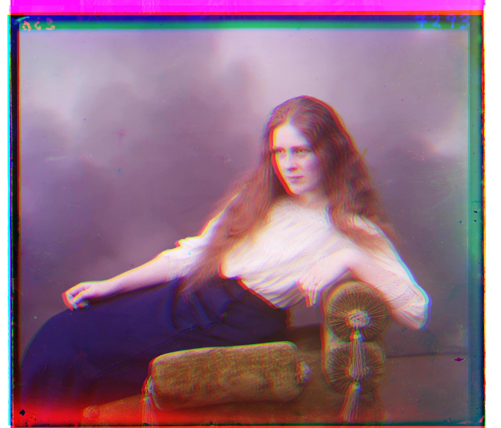
Example Sobal Transformed Image

New Aligned Image
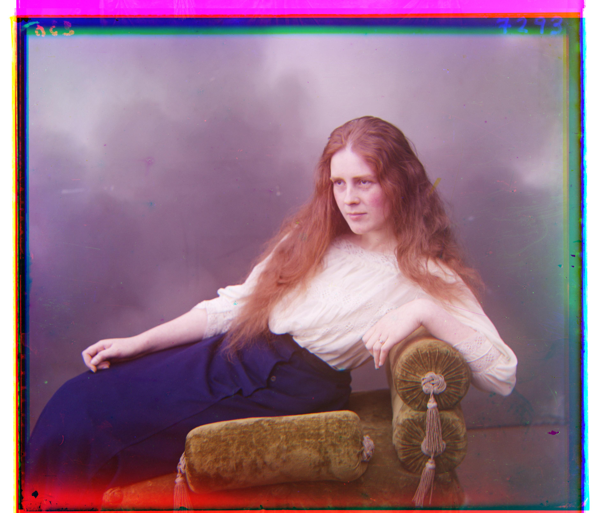
Small Images using Exhaustive Search
Monastery

Displacement: R=[2, 3], G=[2, -3]
Cathedral

Displacement: R=[3, 12], G=[2, 5]
Tobolsk

Displacement: R=[3, 6], G=[3, 3]
Large Scale Images
Church
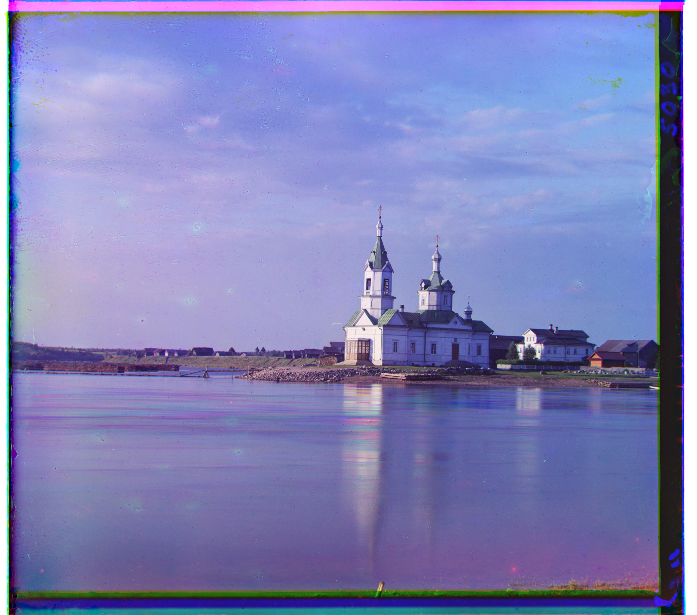
Displacement: R=[-4, 58], G=[4, 24]
Emir
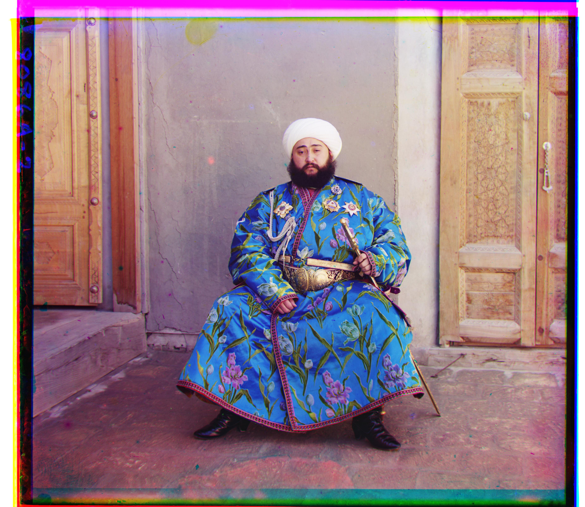
Displacement: R=[41, 106], G=[24, 48]
Harvesters

Displacement: R=[14, 123], G=[17, 59]
Icon
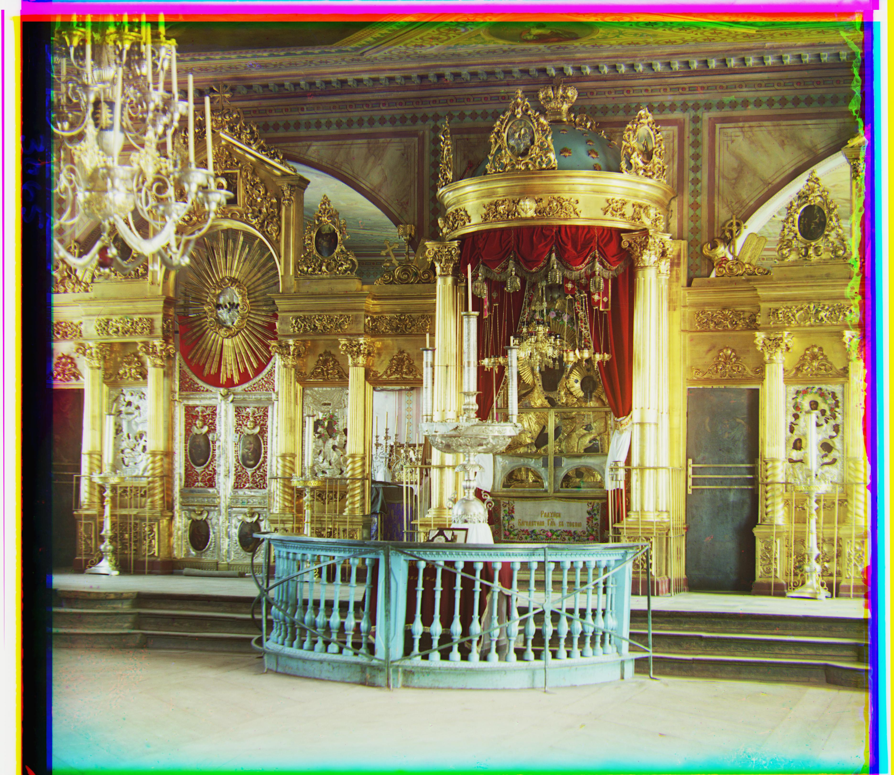
Displacement: R=[23, 90], G=[18, 41]
Lady
Displacement: R=[13, 111], G=[8, 52]
Melons

Displacement: R=[13, 178], G=[10, 82]
Onion Church
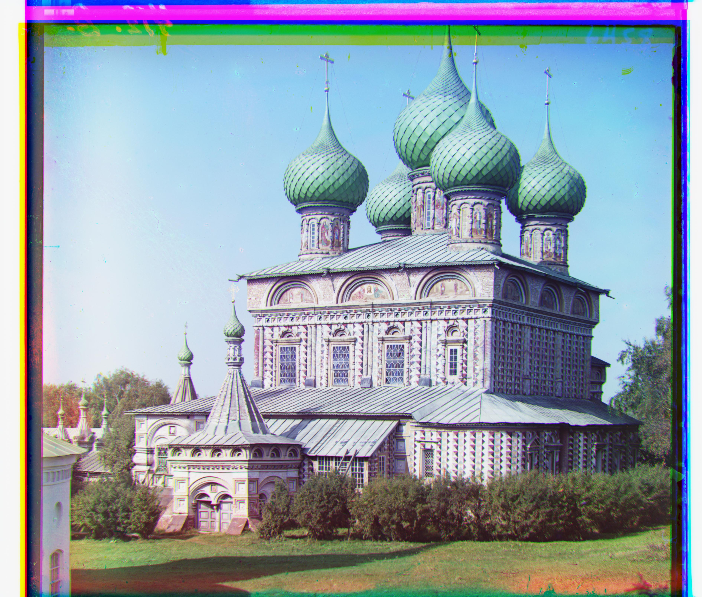
Displacement: R=[37, 108], G=[26, 51]
Sculpture

Displacement: R=[-27, 140], G=[-11, 33]
Self Portrait
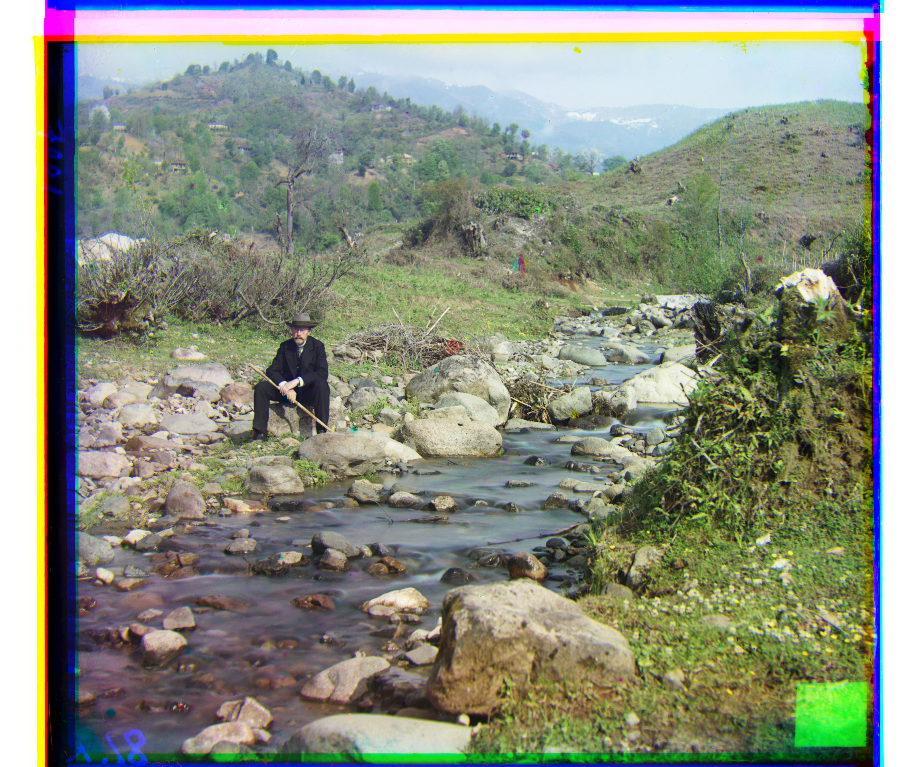
Displacement: R=[37, 175], G=[29, 77]
Three Generations
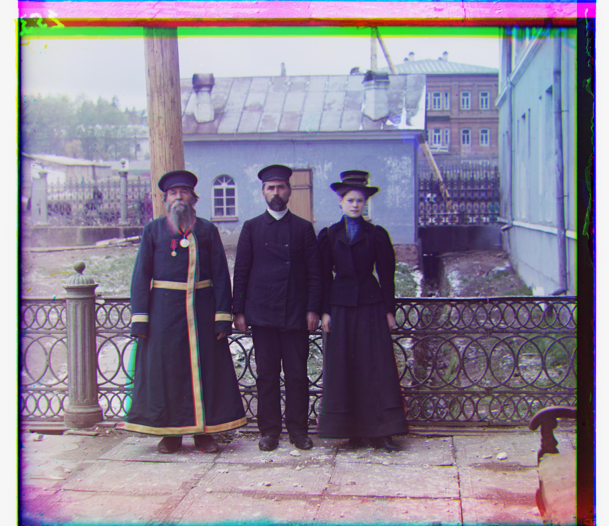
Displacement: R=[10, 109], G=[13, 51]
Train
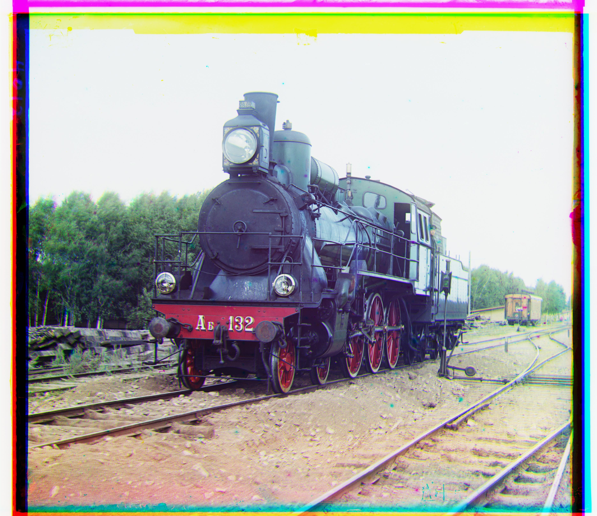
Displacement: R=[22, 88], G=[16, 40]
Custom Images
Na Uralie
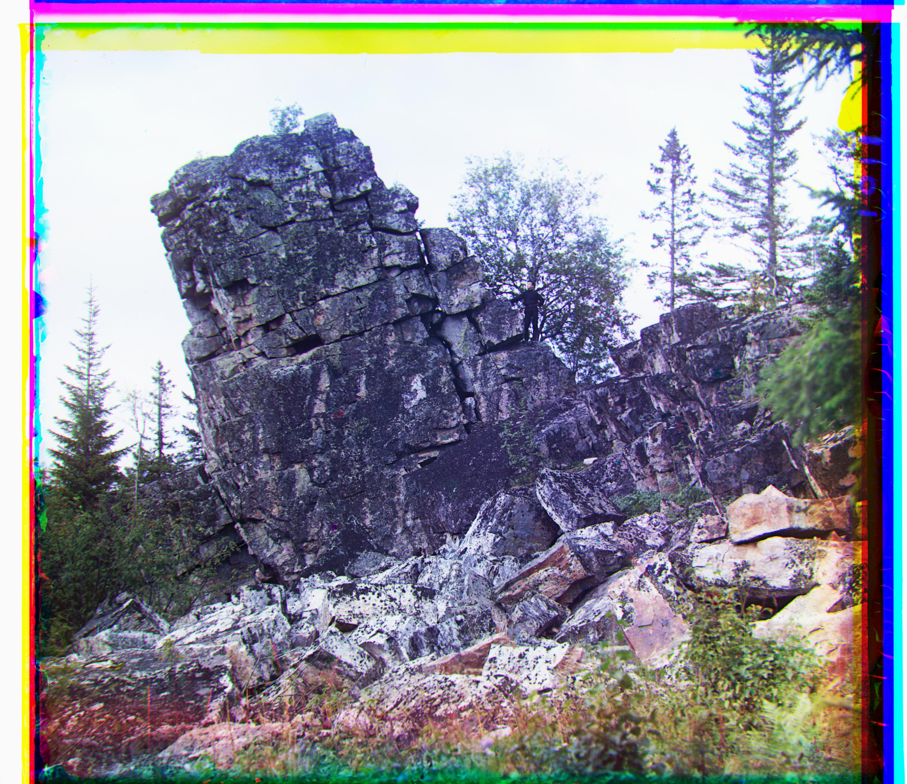
Displacement: R=[37, 108], G=[26, 51]
V Malorossii
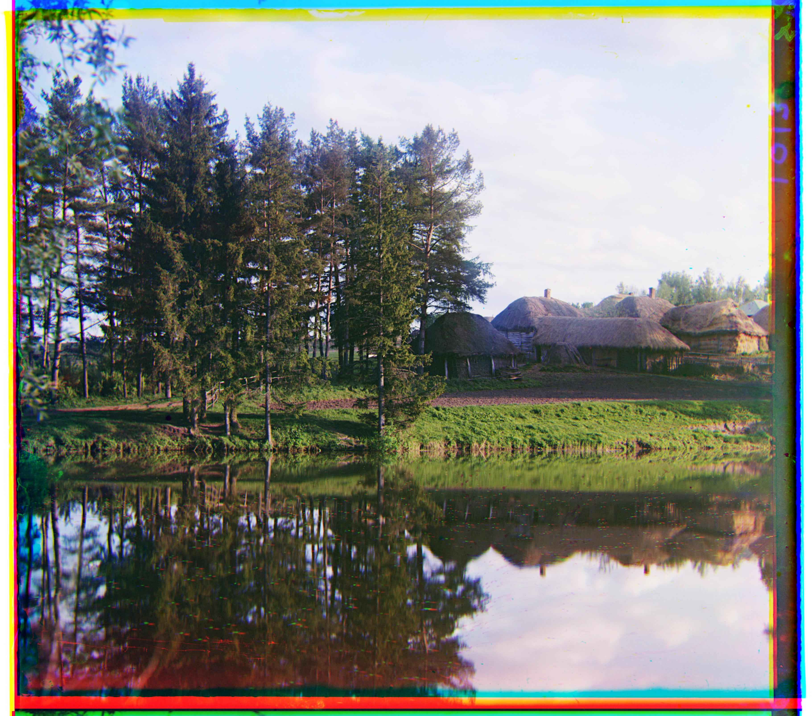
Displacement: R=[10, 109], G=[13, 51]
Sunset
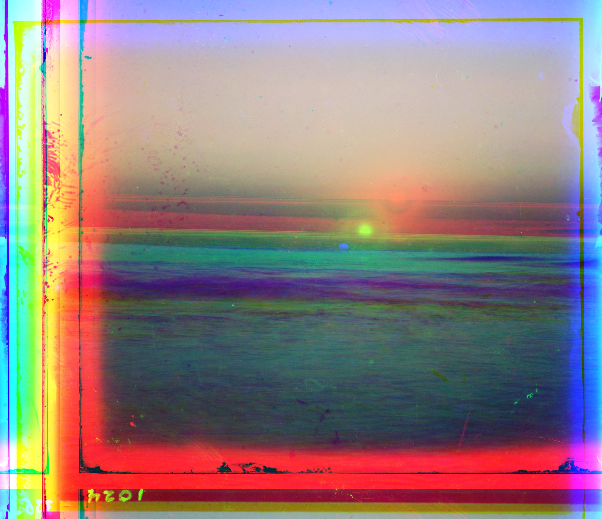
Displacement: R=[387, -186], G=[159, -47]